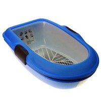
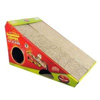
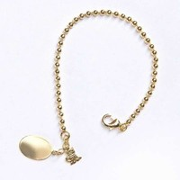

Novidades da CatShop
Descubra aqui as novidades que te encontram na CatShop Bichano
Bandeja Sanitária Furba para Gatos
Chalesco

- Não precisa de auxilio de pá;
- Com essa bandeja higiênica basta peneirar e na bandeja vai ficar apenas as fezes do seu pet, assim você vai ter uma economia maior de areia e menos trabalho na hora de recolher.
Com a areia limpa em uma das bandejas, remonte a sua Bandeja Sanitária Furba colocando a bandeja vazada por cima da outra bandeja que não contém areia e retire a areia peneirada da outra bandeja colando-a sobre a bandeja vazada, desta maneira seu gato já tem areia limpa para utilizar novamente e você não precisou de pás para coletar os resíduos, além da vantagem de uma areia mais limpa para o seu gato sem desperdício. A bandeja ainda dispõe de borda removível que impede que o felino jogue a areia para fora da bandeja enquanto cava. É fácil de limpar e tem ótima durabilidade.
Brinquedo Arranhador Furacão Pet Rampa
Furacão Pet

- Entretenimento para seu pet;
- Ângulo perfeito para a diversão do seu bichano;
- O arranhador vai distraí-lo para que seu pet não queira mais arranhar os móveis.
Colar Os Peludos Cat Unissex Dourado
Os Peludos
 O Colar Os Peludos Cat Unissex Dourado, é uma peça confeccionada com material não precioso, no caso latão revestida com metal nobre como ouro ou prata, tendo a aparência de jóia.
Água e sabão neutro são suficientes para a higienização das peças. Produtos abrasivos geram desgaste do material e diminuem sua vida útil. O contato direto com perfumes, anti-pulgas e carrapatos, e outros produtos químicos, podem manchar as peças.